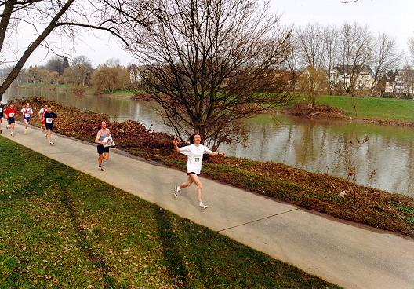

The long runs
-
Copenhagen, May 24, 1992: 4.02:17.
-
Copenhagen, May 23, 1993: 3.29:47.
-
Copenhagen, May 22, 1994: 2.59:31.
-
Copenhagen, May 21, 1995: 3.06:50.
-
Berlin, September 24, 1995: 3.05:20.
-
Copenhagen, May 19, 1996: 3.05:25.
-
Copenhagen, May 18, 1997: 3.07:21.
-
Amsterdam, November 1,
1998: 3.21:45.
-
Copenhagen, May 16, 1999: 3.08:18.
-
Cologne, October 3, 1999: 3.12:39.
-
Copenhagen, May 21, 2000: 3.04:46
.
-
Cologne, October 1, 2000: 3.19:50.
-
Copenhagen, May 20, 2001: 3.11:53.
-
Essen, October 14, 2001: 3.08:04
.
-
Lubeck, June 16, 2002: 3.12:12
.
-
Essen, October 13, 2002: 3.02:47
.
-
SiebenGEBIRGSmarathon, December 14, 2003: 3.23:55
.
-
Copenhagen, May 16, 2004: 3.12:56.
-
Essen, October 10, 2004: 3.07:53
.
-
Bonn, April 1, 2006: 3.12:41
.
-
Zweiländer Marathon, Echternach, October 15, 2006: 3.04:26
.
-
SiebenGEBIRGSmarathon, December 9, 2007: 3.23:11
.
Copenhagen Marathon, May 1996 (3.05:25)
The exhausted looking runner with the number 710 is my friend and
long-time running accomplice, the physicist
Henrik Bruus.
Half-marathon in Saarbrücken, March 1999 (1.28:26)
The runner behind me having problems with his shirt is my former colleague
Jop Sibeyn
(who ran fast half-marathons in both 1999 and 2000) from MPI.

Marathon in Essen, October 2001 (3.08:04)
With my colleague Jochen Fingberg (with number 956) and Inge Neisius-Knichel.
Page created and maintained by Jesper Larsson Träff,
his own (web)master.